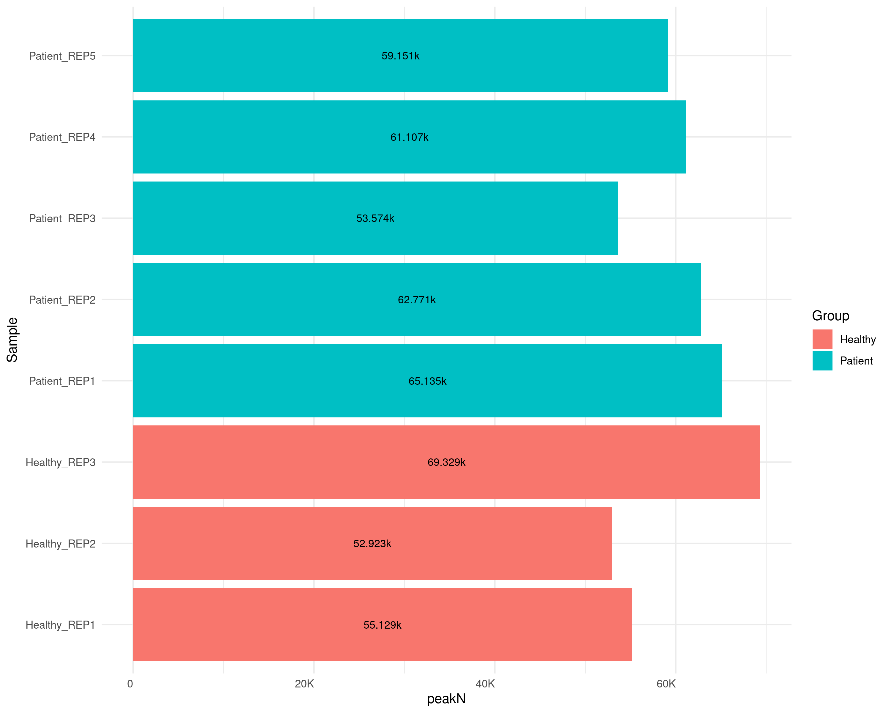
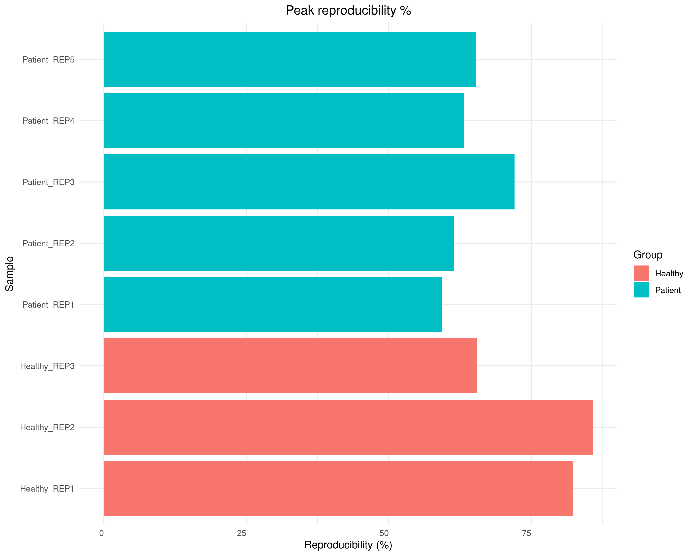
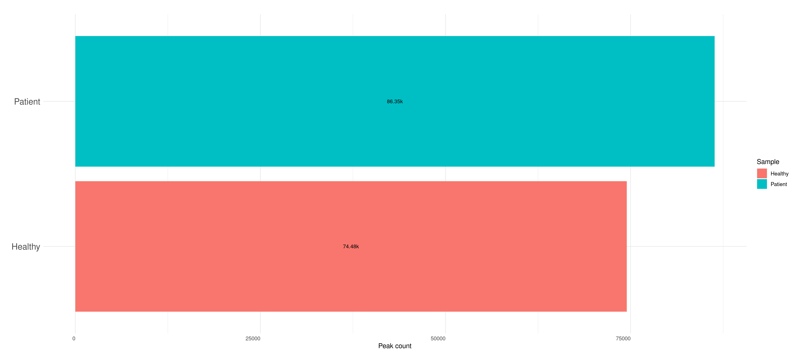
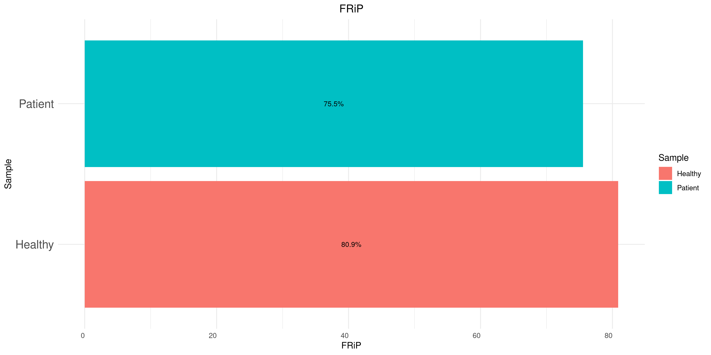
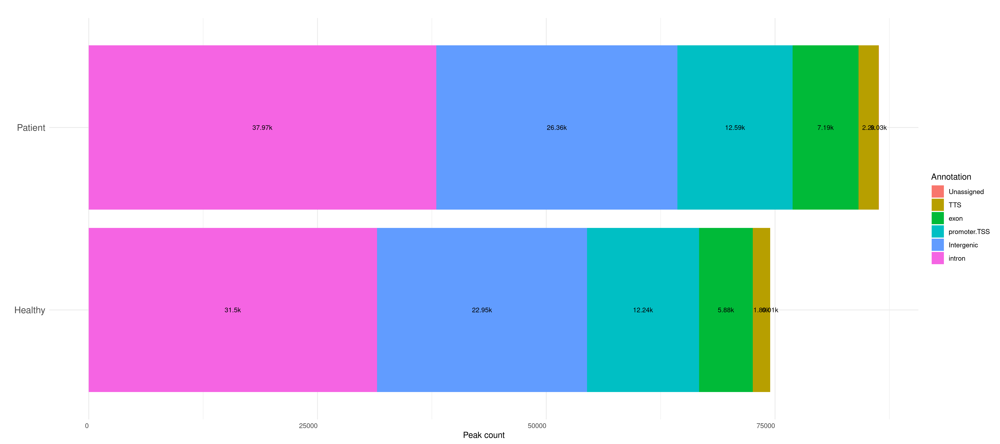

Last updated: 2026-09-04
Checks: 7 0
Knit directory: NK_cells/
This reproducible R Markdown analysis was created with workflowr (version 1.7.2). The Checks tab describes the reproducibility checks that were applied when the results were created. The Past versions tab lists the development history.
Great! Since the R Markdown file has been committed to the Git repository, you know the exact version of the code that produced these results.
Great job! The global environment was empty. Objects defined in the global environment can affect the analysis in your R Markdown file in unknown ways. For reproduciblity it’s best to always run the code in an empty environment.
The command set.seed(20260903) was run prior to running
the code in the R Markdown file. Setting a seed ensures that any results
that rely on randomness, e.g. subsampling or permutations, are
reproducible.
Great job! Recording the operating system, R version, and package versions is critical for reproducibility.
Nice! There were no cached chunks for this analysis, so you can be confident that you successfully produced the results during this run.
Great job! Using relative paths to the files within your workflowr project makes it easier to run your code on other machines.
Great! You are using Git for version control. Tracking code development and connecting the code version to the results is critical for reproducibility.
The results in this page were generated with repository version 8f403c2. See the Past versions tab to see a history of the changes made to the R Markdown and HTML files.
Note that you need to be careful to ensure that all relevant files for
the analysis have been committed to Git prior to generating the results
(you can use wflow_publish or
wflow_git_commit). workflowr only checks the R Markdown
file, but you know if there are other scripts or data files that it
depends on. Below is the status of the Git repository when the results
were generated:
Untracked files:
Untracked: .Rprofile
Untracked: .Rproj.user/
Untracked: NK_cells.Rproj
Untracked: _workflowr.yml
Untracked: data/
Untracked: output/
Note that any generated files, e.g. HTML, png, CSS, etc., are not included in this status report because it is ok for generated content to have uncommitted changes.
These are the previous versions of the repository in which changes were
made to the R Markdown (analysis/peaks.Rmd) and HTML
(docs/peaks.html) files. If you’ve configured a remote Git
repository (see ?wflow_git_remote), click on the hyperlinks
in the table below to view the files as they were in that past version.
| File | Version | Author | Date | Message |
|---|---|---|---|---|
| Rmd | 7906a05 | dchi0030 | 2026-09-04 | intitial commit |
| html | 7906a05 | dchi0030 | 2026-09-04 | intitial commit |
Peaks were called using Macs2 within the NFCore/ATAC pipeline using the default filters.
Here the number of peaks together with their reproducibility across replicates are explored. The reproducibility score for each group is calculated based on the consistency of peak detection across its corresponding replicate samples. Specifically, it measures the proportion of peaks that overlap (i.e., are found in similar locations or regions) among the replicates within that group, relative to the total number of peaks considered. Higher percentages indicate greater consistency between replicates for that group.
The Barplot below represents the total number of peaks identified in each individual replicate sample.

Number of peaks called for each library
This bar plot displays the percentage of peak reproducibility for different sample groups. The reproducibility score for each group is calculated based on the consistency of peak detection across its corresponding replicate samples. Specifically, it measures the proportion of peaks that overlap (i.e., are found in similar locations or regions) among the replicates within that group, relative to the total number of peaks considered. Higher percentages indicate greater consistency between replicates for that group.

Percentage of sample peak reproducibility calculated from the total number of overlapping peaks within group replicate sets
The bar plot below represents the total number of concensus peaks identified in each condition. Concensus peaks are defined as those that are consistently detected across all replicates within a given condition, providing a more reliable representation of the underlying biological signal.

Number of concensus peaks per condition
The Fraction of Reads in Peaks (FRiP) score is a quality metric that quantifies the proportion of sequencing reads that fall within the called peak regions. A higher FRiP score indicates better enrichment of signal over background noise, suggesting that the peak calling was effective and that the data is of high quality. In general, a FRiP score above 1% is considered acceptable for ATAC-seq data, with higher values indicating better quality.

Fraction of Reads in Peaks called per condition
Called peaks were annotated using Homer within the NFCore/ATAC pipeline. The figures below represent the number of peaks annotated to different genomic features per library and per condition. The annotation provides insights into the genomic context of the identified peaks, helping to understand their potential regulatory roles.

Annotation of concensus peaks per condition
seed-set-by-workflowrset.seed(20260903)
setupoptions(bitmapType='cairo')
library(knitr)
library(ggplot2)
library(dplyr)
library(tidyr)
library(ComplexHeatmap)
library(ggrepel)
library(ggpubr)
library(ggplotify)
library(ggvenn)
library(ggseqlogo)
library(patchwork)
library(viridis)
library(formatR)
library(sva)
if (!requireNamespace("downloadthis", quietly = TRUE)) {
install.packages("downloadthis")
}
library(downloadthis)
knitr::opts_chunk$set(
echo = F,
dpi = 150,
error=FALSE,
warning = F,
dev = c("png","pdf"),
message = F)
setup2#Create directories for analysis
analysis.path<-"output/"
if(!dir.exists(analysis.path))
dir.create(analysis.path,showWarnings = T,recursive = T)
analysis.tables<-file.path("docs/tables/")
if(!dir.exists(analysis.tables))
dir.create(analysis.tables, recursive = T)
plots.dir <- file.path("docs/plots/")
if(!dir.exists(plots.dir))
dir.create(plots.dir, recursive = T)
source("code/globalfun.R")
unnamed-chunk-1knitr::opts_chunk$set(fig.path = plots.dir)
# custom hook: after each plot chunk, append a download link
knitr::knit_hooks$set(
plot = function(x, options) {
xx <- gsub("png$", "pdf", x)
fig_link <- xfun::embed_file(xx, text = paste0("Download ", basename(xx)))
paste0(knitr::hook_plot_md(x, options), "\n\n", fig_link, "\n")
}
)
unnamed-chunk-2sample.sheet<-read.csv("output/NFCore_ATACseq/pipeline_info/samplesheet.valid.csv",header=T)
sample.sheet$group<-gsub("_REP.*","",sample.sheet$sample)
unnamed-chunk-3load("output/processed_data.RData")
unnamed-chunk-4peakcaller = list("macs2" = "narrowPeak")
path2peaks <- "output/NFCore_ATACseq//bwa/merged_library/macs2/narrow_peak/"
unnamed-chunk-5peakN = c()
peakWidth = c()
for (samp in gsub("_T1", "", sample.sheet$sample)) {
for (caller in names(peakcaller)) {
peakInfo = read.table(
paste0(path2peaks, "/",samp,".mLb.clN_peaks.narrowPeak"),
header = FALSE,
fill = TRUE
) %>% mutate(width = abs(V3 - V2))
peakN = data.frame(
peakN = nrow(peakInfo),
Caller = caller,
Group = gsub("_R.*", "", samp),
Sample = samp,
Replicate = gsub(".*_", "", samp)
) %>% rbind(peakN, .)
peakWidth = data.frame(
width = peakInfo$width,
Group = gsub("_R.*", "", samp),
Sample = samp,
Replicate = gsub(".*_", "", samp)
) %>% rbind(peakWidth, .)
}
}
save(peakN,peakWidth, file = "output/peak_counts.RData")
unnamed-chunk-6load("output/peak_counts.RData")
generate_datatable(
peakN[,c("Sample","Group","peakN")],
caption = "Total number of peaks per replicate",extra.options = NULL
)
num-peaksggplot(peakN, aes(
x = Sample, y = peakN,fill=Group)) +
geom_col(position = position_dodge(1)) +
coord_flip() +
scale_y_continuous(labels = scales::label_number(
scale_cut = scales::cut_short_scale())) +
theme_minimal() +
geom_text(
aes(label = paste0(peakN/1000,"k")),
position = position_stack(vjust = 0.5),
size = 3
) +
theme(
axis.text.x = element_text(
angle = 0,
hjust = 1,
vjust = 1
),
plot.title = element_text(hjust = 0.5)
)
unnamed-chunk-7library(GenomicRanges)
samples <- unique(sample.sheet$group)
peakOverlap_df_list <- list()
peakOverlap.list <- list()
for (caller in names(peakcaller)) {
# Initialize the nested list for this specific caller to prevent subscript errors
peakOverlap.list[[caller]] <- list()
for (samp in samples) {
# Extract replicates for the current group
repL <- gsub("_T1", "", sample.sheet$sample[sample.sheet$group == samp])
# Store GRanges for each replicate in a temporary list
gr_list <- list()
for (repl in repL) {
# It's a good idea to construct the file path explicitly and safely
file_path <- file.path(path2peaks, paste0(repl, ".mLb.clN_peaks.narrowPeak"))
peakInfo <- read.table(file_path, header = FALSE, fill = TRUE)
gr_list[[repl]] <- GRanges(
seqnames = peakInfo$V1,
ranges = IRanges(start = peakInfo$V2, end = peakInfo$V3),
strand = "*"
)
}
# 2. Get reproducible peaks across ALL replicates using Reduce and subsetByOverlaps
if (length(gr_list) > 0) {
overlap.gr <- Reduce(subsetByOverlaps, gr_list)
} else {
overlap.gr <- GRanges()
}
# Store the overlapping GRanges object
peakOverlap.list[[caller]][[samp]] <- overlap.gr
# Store the metrics as a single-row dataframe in our list
list_name <- paste(caller, samp, sep = "_")
peakOverlap_df_list[[list_name]] <- data.frame(
Group = samp,
Caller = caller,
peakReprod = length(overlap.gr)
)
}
}
# 3. Combine all iteration dataframes efficiently
peakOverlap <- bind_rows(peakOverlap_df_list)
# 4. Join and calculate metrics
# Note: Added 'Caller' to the join conditions to prevent duplication if testing multiple callers
peakReprod <- left_join(peakN, peakOverlap, by = c("Group", "Caller")) %>%
mutate(peakReprodRate = (peakReprod / peakN) * 100)
# 5. Final Selection
final_metrics <- peakReprod %>%
dplyr::select(
Group,
Caller,
Replicate, # Assuming this exists in your original peakN dataframe
peakN,
peakReprodNum = peakReprod,
peakReprodRate
)
save(peakReprod,file="output/peakReprod.RData")
peak-reproducibility-plotload("output/peakReprod.RData")
ggplot(peakReprod, aes(
x = Sample, y = peakReprodRate,fill=Group)) +
geom_col(position = position_dodge(1)) +
coord_flip() +
scale_y_continuous(labels = scales::label_number(
scale_cut = scales::cut_short_scale())) +
labs(title = "Peak reproducibility %",
x = "Sample",
y = "Reproducibility (%)") +
theme_minimal() +
theme(
axis.text.x = element_text(
angle = 0,
hjust = 1,
vjust = 1
),
plot.title = element_text(hjust = 0.5)
)
number-concensus-peaksplot_data <- data.frame(
Sample = rownames(peak_count.stats_conc),
Peak_count = diag(peak_count.stats_conc)
)
ggplot(plot_data,
aes(x = Sample, y = Peak_count,fill = Sample)) +
geom_col() +
coord_flip() +
labs(title = "",
x = "",
y = "Peak count") +
geom_text(aes(label = paste0(round(Peak_count / 1000, 2), "k")),
position = position_stack(vjust = 0.5),
size = 3) +
theme_minimal() +
theme(
axis.text.x = element_text(
angle = 0,
hjust = 1,
vjust = 1
),
axis.text.y = element_text(
size = 14
),
plot.title = element_text(hjust = 0.5)
)
unnamed-chunk-8peak.qual$group <-gsub("_REP.*","",peak.qual$Sample)
colnames(peak.qual)[ncol(peak.qual)-1]<-"FRiP"
FRiP-libraryggplot(peak.qual, aes(
x = Sample, y = FRiP,fill=group)) +
geom_col() +
coord_flip() +
labs(title = "FRiP",
x = "",
y = "FRiP",
fill= "group") +
geom_text(
aes(label = paste0(FRiP,"%")),
position = position_stack(vjust = 0.5),
size = 3
) +
theme_minimal() +
theme(
axis.text.x = element_text(
angle = 0,
hjust = 1,
vjust = 1
),
axis.text.y = element_text(
size = 14
),
plot.title = element_text(hjust = 0.5)
)
FRiP-conditionggplot(frip.plot_data, aes(
x = Sample, y = FRiP,fill=Sample)) +
geom_col() +
coord_flip() +
labs(title = "FRiP",
x = "Sample",
y = "FRiP",
fill= "Sample") +
geom_text(
aes(label = paste0(round(FRiP,1),"%")),
position = position_stack(vjust = 0.5),
size = 3
) +
theme_minimal() +
theme(
axis.text.x = element_text(
angle = 0,
hjust = 1,
vjust = 1
),
axis.text.y = element_text(
size = 14
),
plot.title = element_text(hjust = 0.5)
)
peak-annotation-barplotggplot(peak.annotation_stats, aes(
x = Sample, y = Peak_count,fill=Stats)) +
geom_col() +
coord_flip() +
labs(title = "",
x = "",
y = "Peak count",
fill= "Annotation") +
geom_text(
aes(label = paste0(round(Peak_count/1000,2),"k")),
position = position_stack(vjust = 0.5),
size = 3
) +
theme_minimal() +
theme(
axis.text.x = element_text(
angle = 0,
hjust = 1,
vjust = 1
),
axis.text.y = element_text(
size = 14
),
plot.title = element_text(hjust = 0.8)
)
peak-annot-conditionannotation.conc.stats$group <- gsub("_REP.*","",annotation.conc.stats$Sample)
ggplot(annotation.conc.stats, aes(
x = Sample, y = Peak_count,fill=Stats)) +
geom_col() +
coord_flip() +
labs(title = "",
x = "",
y = "Peak count",
fill= "Annotation") +
geom_text(
aes(label = paste0(round(Peak_count/1000,2),"k")),
position = position_stack(vjust = 0.5),
size = 3
) +
theme_minimal() +
theme(
axis.text.x = element_text(
angle = 0,
hjust = 1,
vjust = 1
),
axis.text.y = element_text(
size = 12
),
plot.title = element_text(hjust = 0.8)
)
session-info-chunk-inserted-by-workflowrsessionInfo()
R version 4.5.1 (2025-06-13)
Platform: x86_64-pc-linux-gnu
Running under: Ubuntu 22.04.5 LTS
Matrix products: default
BLAS: /mnt/software/apps/R/4.5.1/lib/R/lib/libRblas.so
LAPACK: /mnt/software/apps/R/4.5.1/lib/R/lib/libRlapack.so; LAPACK version 3.12.1
locale:
[1] LC_CTYPE=en_AU.UTF-8 LC_NUMERIC=C
[3] LC_TIME=en_AU.UTF-8 LC_COLLATE=en_AU.UTF-8
[5] LC_MONETARY=en_AU.UTF-8 LC_MESSAGES=en_AU.UTF-8
[7] LC_PAPER=en_AU.UTF-8 LC_NAME=C
[9] LC_ADDRESS=C LC_TELEPHONE=C
[11] LC_MEASUREMENT=en_AU.UTF-8 LC_IDENTIFICATION=C
time zone: Australia/Melbourne
tzcode source: system (glibc)
attached base packages:
[1] grid stats graphics grDevices utils datasets methods
[8] base
other attached packages:
[1] downloadthis_0.5.0 sva_3.56.0 BiocParallel_1.42.2
[4] genefilter_1.90.0 mgcv_1.9-4 nlme_3.1-170
[7] formatR_1.14 viridis_0.6.5 viridisLite_0.4.3
[10] patchwork_1.3.2 ggseqlogo_0.2.2 ggvenn_0.1.19
[13] ggplotify_0.1.3 ggpubr_1.0.0 ggrepel_0.9.8
[16] ComplexHeatmap_2.24.1 tidyr_1.3.2 dplyr_1.2.1
[19] ggplot2_4.0.3 knitr_1.51 workflowr_1.7.2
loaded via a namespace (and not attached):
[1] RColorBrewer_1.1-3 rstudioapi_0.19.0 jsonlite_2.0.0
[4] shape_1.4.6.1 magrittr_2.0.5 farver_2.1.2
[7] rmarkdown_2.31 GlobalOptions_0.1.4 fs_2.1.0
[10] vctrs_0.7.3 memoise_2.0.1 rstatix_1.1.0
[13] htmltools_0.5.9 broom_1.0.13 Formula_1.2-6
[16] gridGraphics_0.5-1 sass_0.4.10 bslib_0.12.0
[19] htmlwidgets_1.6.4 cachem_1.1.0 whisker_0.4.1
[22] mime_0.13 lifecycle_1.0.5 iterators_1.0.14
[25] pkgconfig_2.0.3 Matrix_1.7-6 R6_2.6.1
[28] fastmap_1.2.0 GenomeInfoDbData_1.2.14 MatrixGenerics_1.20.0
[31] clue_0.3-68 digest_0.6.39 colorspace_2.1-3
[34] AnnotationDbi_1.70.0 S4Vectors_0.50.2 ps_1.9.3
[37] rprojroot_2.1.1 crosstalk_1.2.2 RSQLite_3.53.3
[40] labeling_0.4.3 httr_1.4.8 abind_1.4-8
[43] compiler_4.5.1 bit64_4.8.4 withr_3.0.3
[46] doParallel_1.0.17 S7_0.2.2 backports_1.5.1
[49] carData_3.0-6 DBI_1.3.0 ggsignif_0.6.4
[52] rappdirs_0.3.4 rjson_0.2.23 tools_4.5.1
[55] otel_0.2.0 httpuv_1.6.17 glue_1.8.1
[58] callr_3.8.0 promises_1.5.0 getPass_0.2-4
[61] cluster_2.1.8.3 generics_0.1.4 gtable_0.3.6
[64] car_3.1-5 XVector_0.48.0 BiocGenerics_0.54.1
[67] foreach_1.5.2 pillar_1.11.1 stringr_1.6.0
[70] yulab.utils_0.2.4 limma_3.64.3 later_1.4.8
[73] circlize_0.4.18 splines_4.5.1 lattice_0.23-1
[76] survival_3.8-11 bit_4.6.0 annotate_1.86.1
[79] tidyselect_1.2.1 locfit_1.5-9.12 Biostrings_2.76.0
[82] git2r_0.36.2 gridExtra_2.3.1 IRanges_2.42.0
[85] edgeR_4.6.3 stats4_4.5.1 xfun_0.60
[88] Biobase_2.68.0 statmod_1.5.2 matrixStats_1.5.0
[91] DT_0.34.0 stringi_1.8.9 UCSC.utils_1.4.0
[94] yaml_2.3.12 evaluate_1.0.5 codetools_0.2-20
[97] tibble_3.3.1 cli_3.6.6 xtable_1.8-8
[100] processx_3.9.0 jquerylib_0.1.4 dichromat_2.0-1
[103] Rcpp_1.1.2 GenomeInfoDb_1.44.3 png_0.1-9
[106] XML_3.99-0.24 parallel_4.5.1 blob_1.3.0
[109] scales_1.4.0 purrr_1.2.2 crayon_1.5.3
[112] GetoptLong_1.1.1 rlang_1.3.0 KEGGREST_1.48.1